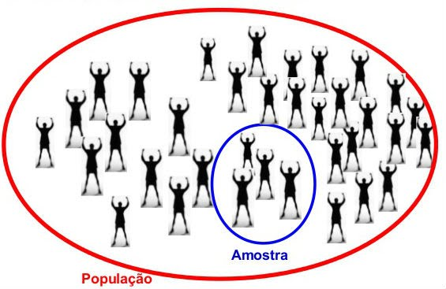

Estatistica
Estatistica é a ciencia que trata da coleta, organizacao, analise, tratamento e interpretacao dos dados
Dados Absolutos e Relativos Distribuicao de FrequenciaMinhas Redes Sociais
Estatistica
Dados
Consistem em informações provinientes de observaçoes, contagens estudos entre outros.
Os conjuntos dos dados podem ser divididos em 2 grupos:
População
Amostra
E ainda os dados podem ser caracterizado por:
niveis de mensuracao - nominal - ordinal - intervalar - nivel de razao
Os dados podem ser classificados em qualitativo e quantitativo
Qualitativo
Consistem em atributos, rotulos entradas não numéricas
Quantitativo
Consiste em medidas numéricas ou contagens
Populacao
População é todo o conjunto a ser estudado pro exemplo a populacao de um pais
Amostra
É uma pequena parte ou um subconjunto da População a ser estudada sendo que a amostra é mais rapido de se estudar e processar, mas no entanto amostra tem de ser representativa e randomica de modo que os seus dados devem ser usados para tirar conclusoes
- Amostragem Baseadas em probabilidade
- Amostragem nao baseadas em probabilidade
Classificacao das amostragens
- Amostragem randomica
- Seleciona um grupo de forma aleatoria para fazer o estudo
- Amostragem Sistemática
- Desenlvolve um sistema baseado em probabilidade para a escolha dos elementos
- Amostragem Estratificada
- Vem de extrato sendo que devemos retornar uma amostra proporcionalmente dos elementos conforme a quantidade ou a percentagem a ser extraida
- Amostragem por grupos
- Amostragem por grupos divide a populacao em grupos e dentro desses grupos estao os elementos a serem estudados
- Amostragem de Reservatório
- Dados de streaming ou dados continuos que estao chegando ao ambiente provientes de web com exemplo. A ideia desse tipo de amostragem e criar um algoritimo que seja capaz de selecionar um item ou varios com a mesma probalidade de seleccao.
Ramos de Estatistica
- Estatistica Descritiva
- Estatistica Inferencial
Estatistica Descritiva é o ramo que envolve organizacao representacao e o resumo dos dados.
Estatistica Inferencial é o ramo que o uso de uma amostra para chegar a uma conclusão e a ferramenta basica para esse ramo é a probabilidade.
Classificacao
Para usar as tecnicas de Classificacao devemos ter uma base de dados histórica e rotulada para que se possa aplicar as tecnicas de machine learning sendo que, uma base de dados e para o treinamento dos algoritimos de aprendizagem e uma base de dados historica para poder que se possa submeter os dados ao algoritimo que que possa fazer as devidas previsoes com os novos registros.
Exemplos de algoritimos de aprendizagem é o algoritimo Naive Bayes baseado em probabilidade sendo que o objectivo e gerar uma tabela de probabilidade
Dados Desbalanceados
Dados de desbalanceados quando numa base de dados rotulada hover por exemplo 2 tipis de classifica para um cliente, e uma das classificaoes é muito diferente em relacao a outra classificao em termos de quantidade. E falar em dados desbalenceados nos obriga a falar de Undersampling(subamostragem) e Oversampling(Sobreamostragem) e essas tecnicas sao usadas para se trabalhar quando ha dados desbalanceados.